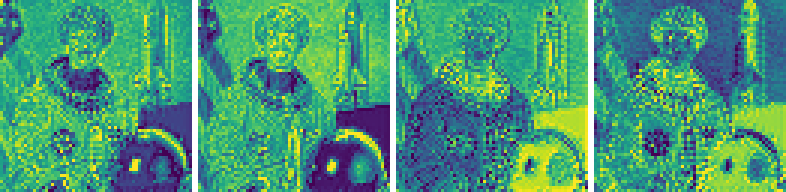
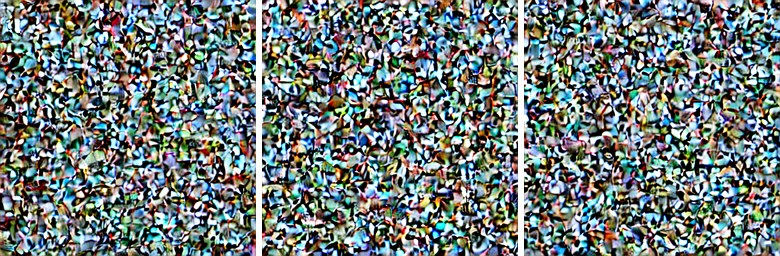

Lecture 17
SPC5004: Tools and Applications of Generative AI
Prof. Anthony E. Phillips
Tuesday, 24 November 2026
Last week’s models made 32 × 32 grey digits, and took their instructions as one of ten labels.
A 512 × 512 colour image is 786,432 numbers. A pixel-space diffusion model would run its UNet over all of them, at every one of dozens of steps.
Most of those numbers are fine detail: the texture of brush strokes, the edge of a cloud. Do we need to diffuse those, step after step?
An autoencoder squeezes an image into a smaller latent and rebuilds it. Stable Diffusion’s latent is a grid, not a flat vector like our MNIST autoencoder’s.
scaling_factor (0.18215) so that they have a standard deviation of about 1, like the noise they will be mixed with.The four channels of that latent, each 64 × 64:

What if we skip diffusion, and just decode random latents \(z \sim \mathcal{N}(0, I)\), as we did with our MNIST VAE?

The decoder only knows how to decode latents that look like real ones. With a KL term this weak, random noise is nothing like a real latent. Making a good latent is the diffusion model’s job.
A class label picked one row of a lookup table. A prompt can be any sentence, so there is no table to look it up in.
clip-vit-large-patch14, the very model from the CLIP lecture.In the CLIP lecture, we summarised a caption as one vector: the final vector for <|endoftext|>, projected into the shared space.
A class embedding was simply added to the time embedding: one vector, applied to the whole image.
That won’t do for a prompt. “Lighthouse” matters on the cliff, “sunset” in the sky, and “oil painting” everywhere.
We want each part of the image to look up the words that are relevant to it. That is a soft dictionary lookup: attention.
In the encoder–decoder transformer, the decoder’s queries attended to the encoder’s keys and values. Here:
\(Q\) is \(n \times d_k\) and \(K\) is \(77 \times d_k\), so the attention weights are \(n \times 77\): for each position, a probability over the tokens. At 64 × 64, \(n = 4096\).
Last week ended with a problem: a network can reduce its loss a lot while largely ignoring the condition.
During training, the prompt is replaced by the empty prompt "" for a random fraction of the examples. Stable Diffusion v1.5 drops 10%, according to its model card.
"".\[\hat{\epsilon} = \hat{\epsilon}_{\text{uncond}} + s \,\big(\hat{\epsilon}_{\text{cond}} - \hat{\epsilon}_{\text{uncond}}\big)\]
\(s\) is the guidance scale. At \(s = 1\) it is just the conditional prediction. Above 1, we step further in the prompt’s direction than the model itself would.
Each ring is one class: the conditional guess uses one ring, the unconditional guess all three. The plot shows 200 samples per class, from the exact best guesses and the same starting noise.
Watch the colours. As \(s\) grows, red and yellow both come through more strongly. But with noise A, from about \(s = 5\) they swap places: a red wall and a yellow bicycle. With noise B the bicycle stays red, and red spreads onto the wall. Guidance can only exaggerate what the text encoder captured, and CLIP is weak on which word goes with which.
diffusers uses \(s = 7.5\) by default for Stable Diffusion: pipe(prompt, guidance_scale=7.5).A negative prompt uses the same formula with a prompt such as "blurry" in place of "", so the image is pushed away from it.
Our DDPM sampler took 1,000 steps. Stable Diffusion’s default scheduler, PNDM, takes 50, and works with fewer.
4, 8, 15, 30 and 50 steps for “a bowl of ramen with chopsticks, photograph”. Same starting noise, \(s = 7.5\). Even 4 steps give a recognisable picture. More add detail, and the picture changes, because each setting takes a different path from the same noise.
pipe.scheduler.set_timesteps(30) # which t to visit
latents = torch.randn(1, 4, 64, 64) * pipe.scheduler.init_noise_sigma
embeddings = torch.cat([uncond_embeddings, text_embeddings]) # "" and the prompt
for t in pipe.scheduler.timesteps:
latent_input = pipe.scheduler.scale_model_input(torch.cat([latents] * 2), t)
noise_pred = pipe.unet(latent_input, t, encoder_hidden_states=embeddings).sample
uncond, cond = noise_pred.chunk(2) # split the batch of two
noise_pred = uncond + guidance_scale * (cond - uncond)
latents = pipe.scheduler.step(noise_pred, t, latents).prev_sample
image = pipe.vae.decode(latents / pipe.vae.config.scaling_factor).sample| Part | Parameters | Runs |
|---|---|---|
| Text encoder (CLIP text tower) | 123,060,480 | once per prompt |
| UNet | 859,520,964 | twice per step |
| VAE (encoder + decoder) | 83,653,863 | decoder once, at the end |
About 1.07 billion parameters in all. Stored as 16-bit floats (torch.float16), that is about 2.1 GB, half the size of 32-bit weights, and enough precision for generating.